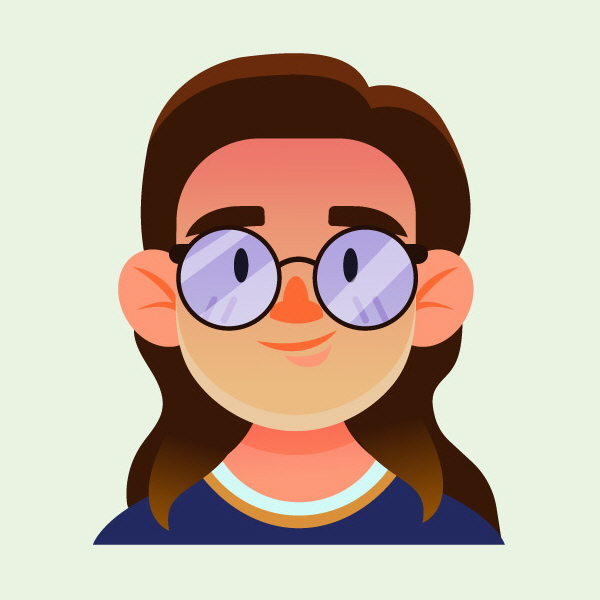

suns
나만의 머신러닝
이 프로그램은 Teachable Machine으로
주먹과 보자기의 사진을 학습시킨 결과물입니다.
학습된 데이터를 통해 딥러닝 모델이 만들어지며,
이 모델은 카메라 이미지를 바탕으로
주먹과 보자기 중
무엇과 더 유사한지 확률을 계산합니다.
각 항목 옆에 표시되는 % 수치는
머신이 판별한 상대적 유사도로,
한 쪽이 95% 이상 유사도를 보였을 때
해당 항목에 대한 자세한 설명이 나옵니다.
Question
우리는 주먹과 보자기의 차이를 알지만
과연 컴퓨터도 그 차이를 알까?
그래서 내가 컴퓨터에게 가르쳐줬어!
주먹과 보자기를 보여줘봐!
Machine Learning 
Start를 눌러 시작해주세요